Relatividade Geral · UDESC/CCT · Laboratório
ODEROM
Escrever a métrica e receber de volta os símbolos de Christoffel, o Riemann, o Ricci e as equações de campo — não só o valor, mas a cadeia de igualdades que leva até ele. Contas dos capítulos 5 e 6, refeitas pelo programa.
Entre as aulas 24 e 25 · use → e ← para navegar, F para tela cheia
Roteiro
Onde isto entra
| Parte | Assunto |
|---|---|
| 1 | Por que um motor simbólico; a tela e a galeria |
| 2 | A linguagem: \text{manifold}, \text{chart}, \text{metric}, \text{eval} |
| 3 | \text{derive}: a conta de uma componente, passo a passo |
| 4 | Quatro contas do Capítulo 5 |
| 5 | Sete contas do Capítulo 6, e três deduções |
| 6 | O método do controle; o que o programa não faz |
O Capítulo 5 ensinou a derivar em coordenadas curvilíneas; o Capítulo 6 vai levar isso a uma variedade sem espaço ambiente. Entre os dois há uma pergunta prática: como conferir uma conta de vinte termos sem fazê-la três vezes?
Nada aqui substitui a dedução. O que o programa faz é tirar do caminho o erro de sinal, para que a atenção fique onde ela rende — na estrutura do argumento.
Parte 1
O tamanho real das contas
A apostila pede, no Capítulo 6, que se verifique a identidade de Bianchi e as simetrias do Riemann. Vale medir o que isso custa à mão.
| Objeto | Células em n=4 | O que cada uma é |
|---|---|---|
| \Gamma^\rho{}_{\mu\nu} | 40 | uma soma de três derivadas da métrica |
| R^\mu{}_{\nu\alpha\beta} | 256 | duas derivadas de \Gamma e dois produtos \Gamma\Gamma |
| R_{\mu\nu\alpha\beta;\lambda} | 1024 | uma derivada covariante de um tensor de ordem 4 |
Conferir Bianchi à mão em Schwarzschild é fazer 1024 derivadas covariantes. Ninguém faz, e por isso a identidade costuma ser aceita sem verificação — o que é uma pena, porque é dela que sai \nabla_\mu G^{\mu\nu}=0, e daí a compatibilidade das equações de Einstein com a conservação da energia.
Parte 1
A tela
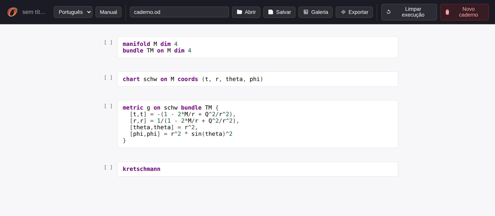
Um caderno de blocos, como um notebook Jupyter — mas sem instalar nada: o motor é compilado para WebAssembly e roda dentro da aba. Funciona no laboratório, num notebook emprestado e numa máquina onde não se pode instalar nada.
Shift+Enter executa o bloco e passa ao próximo · Ctrl+Enter executa e fica · Alt+Enter insere um bloco. O número entre colchetes à esquerda é a ordem de execução.
Parte 1
A galeria: seis métricas prontas
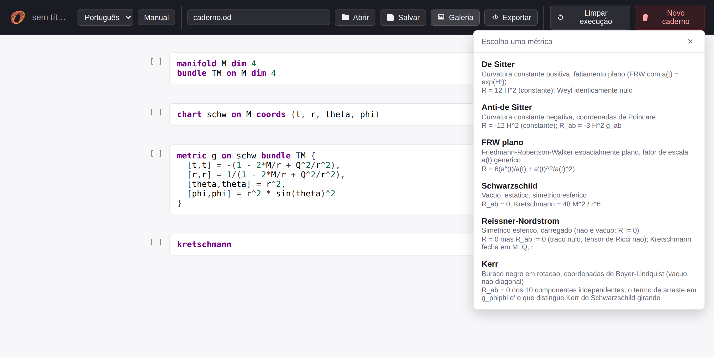
Cada entrada traz, junto com a métrica, o que se espera dela — Schwarzschild é vácuo e tem R_{\mu\nu}=0; Reissner–Nordström tem R=0 mas R_{\mu\nu}\ne0. Serve de gabarito: se o programa devolvesse outra coisa, o erro apareceria antes de você confiar nele.
Parte 2
A anatomia de um documento
Quatro linhas bastam. Elas declaram, nesta ordem, o espaço, o fibrado tangente, a carta e a métrica — exatamente os objetos da Seção 6.1.
É o plano euclidiano em polares — a métrica da equação (5.4) da apostila. Repare que a dimensão é declarada, não inferida: o programa recusa uma métrica com o número errado de componentes em vez de adivinhar o que você quis dizer.
Parte 2
As consultas
Pelo nome, quando o objeto é padrão:
Ou guardando o resultado num tensor, para usá-lo depois:
E derive, que devolve a dedução — a Parte 3:
E \text{eval}, que avalia uma expressão de índices nas componentes declaradas:
A convenção dos índices. A vírgula separa índices; o ponto e vírgula abre a derivada covariante, como na Seção 5.3. Letra repetida soma.
Parte 3
Mais do que a resposta
Um valor pronto não ensina. O comando derive devolve a mesma
componente que a listagem mostra, mas como uma cadeia numerada de
igualdades, em que cada substituição, cada termo que se anula e
cada cancelamento é dito em voz alta.
| Passo | O que ele afirma |
|---|---|
| fórmula geral | a definição, com índices abstratos |
| índices fixados | os livres viram coordenadas |
| soma no índice mudo | a soma aberta, termo a termo |
| termos nulos removidos | cada um, nomeado |
| componentes substituídas | os valores na carta |
| derivadas calculadas | uma por uma |
| simplificação | o valor final |
Parte 3 · a dedução de \Gamma^r{}_{\theta\theta}
Da fórmula geral até a soma aberta
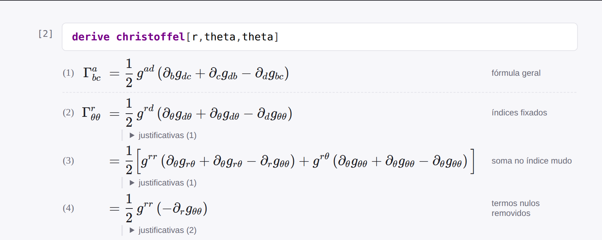
É a dedução da Seção 5.4 da apostila, na ordem da apostila — com a soma em d escrita por extenso antes de qualquer corte.
Parte 3 · a dedução de \Gamma^r{}_{\theta\theta}
E daí até -r
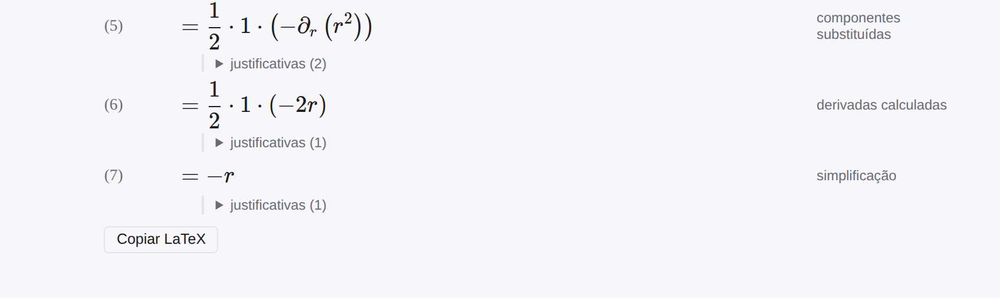
O resultado é a equação (5.12). A diferença é que agora dá para apontar em que passo uma conta sua divergiu da dele — e não só descobrir que divergiu.
Parte 3 · justificativas
Cada termo que some tem nome
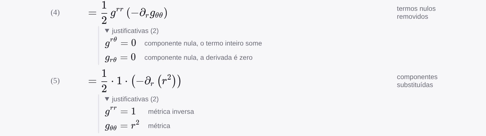
Cada passo abre numa lista de justificativas. No passo 4, por que cada termo caiu: g^{r\theta}=0, logo o termo inteiro some; g_{r\theta}=0, logo sua derivada é zero. É a diferença entre ver o resultado e poder discordar dele.
Parte 4 · Capítulo 5
Quatro contas
do Capítulo 5
Coordenadas polares no plano: conexão, compatibilidade métrica, divergência e laplaciano. Tudo o que o capítulo deduziu à mão, conferido em quatro blocos.
Conta 1 · Seção 5.4
Os três símbolos de Christoffel em polares
A apostila os obtém duas vezes: derivando os vetores de base na Seção 5.3 e pela fórmula (5.20) na Seção 5.4. O resultado é a equação (5.12).
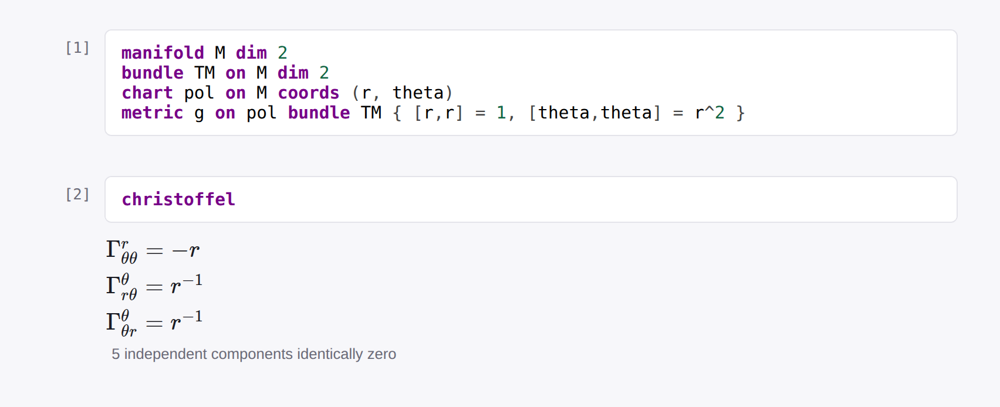
Os três do livro, com os mesmos sinais — e a linha que costuma ficar sem conferir: os outros cinco se anulam. Essa é metade da afirmação, e é a metade que ninguém verifica à mão.
Conta 2 · Seção 5.4
A métrica é constante sob a derivada covariante
A compatibilidade métrica, equação (5.19). A apostila a confere num caso: \nabla_r g_{\theta\theta}=2r-\tfrac1r r^2-\tfrac1r r^2=0. Aqui são as oito componentes de uma vez.
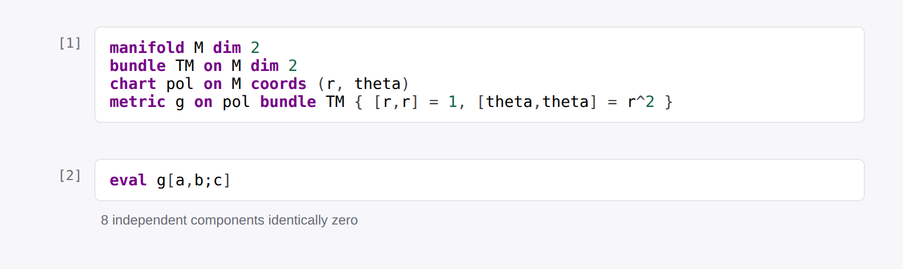
Oito, e não quatro: são 2^3 combinações de três índices em duas dimensões. A derivada parcial de g_{\theta\theta} vale 2r; a covariante vale zero. A diferença entre as duas é exatamente o que a conexão carrega.
Conta 3 · Seção 5.3
A divergência, e o termo que a parcial não dá
Equação (5.15): \nabla\cdot\vec V=\partial_rV^r+\partial_\theta V^\theta+V^r/r. O terceiro termo vem de \Gamma^\alpha{}_{r\alpha}=1/r.
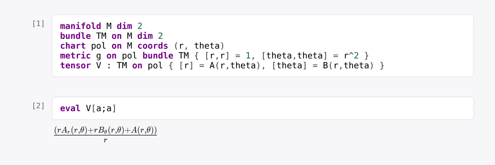
Dividindo por r: A_r+B_\theta+A/r. As componentes são funções indeterminadas de propósito — com um vetor concreto a conta fecharia por acidente aritmético em vez de reproduzir a fórmula.
Conta 4 · Seção 5.3
O laplaciano, pelo caminho do livro
Equação (5.17). O caminho é converter a 1-forma gradiente em vetor — o que dá componentes (\phi_{,r},\ \phi_{,\theta}/r^2) — e aplicar a divergência de novo.
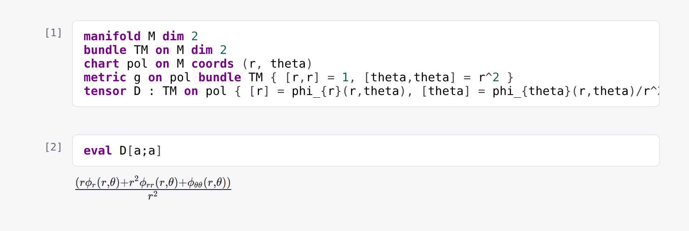
Dividindo por r^2:
\phi_{rr}+\phi_r/r+\phi_{\theta\theta}/r^2.
O phi_{r}(r,theta) do documento é a notação de subscrito do
ODEROM — derivada tratada como símbolo opaco, que é
exatamente o estatuto que ela tem aqui.
Parte 5 · Capítulo 6
Sete contas
do Capítulo 6
Curvatura: o critério que separa carta torta de espaço curvo, a esfera, o comutador, as simetrias, Bianchi e a divergência de Einstein.
Conta 5 · Seção 6.2
Conexão não nula, curvatura nula
O aviso da Seção 6.2: as componentes g_{\mu\nu} dependerem do ponto não diz nada sobre curvatura. O plano em polares tem três \Gamma não nulos e é plano.
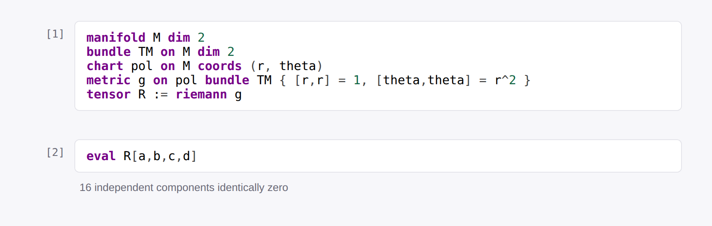
Dezesseis células, todas nulas. Os termos quadráticos \Gamma\Gamma cancelam exatamente as derivadas \partial\Gamma — e é esse cancelamento que faz do Riemann um tensor, e não um acidente de carta.
Conta 6 · Seção 6.5
E o cilindro, que é plano sem ser o plano
Mesma máquina, outra métrica: g_{zz}=1, g_{\phi\phi}=a^2. Coeficientes constantes, todos os \Gamma nulos — e o Riemann também.
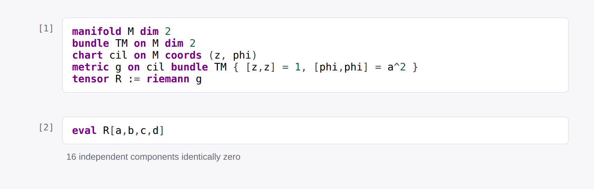
Os dois exemplos juntos é que ensinam. O cilindro é plano por motivo fácil; o plano em polares é plano por motivo difícil. Um programa que apagasse os termos \Gamma\Gamma passaria no cilindro e erraria o plano em polares — foi assim que o ODEROM foi conferido, sabotando-o.
Conta 7 · Seção 6.5
A esfera: uma componente, e o escalar
Na esfera de raio a a única componente independente é R_{\theta\phi\theta\phi}=a^2\sin^2\theta, e R=2/a^2 — duas vezes a curvatura gaussiana 1/a^2, como tem de ser em duas dimensões.
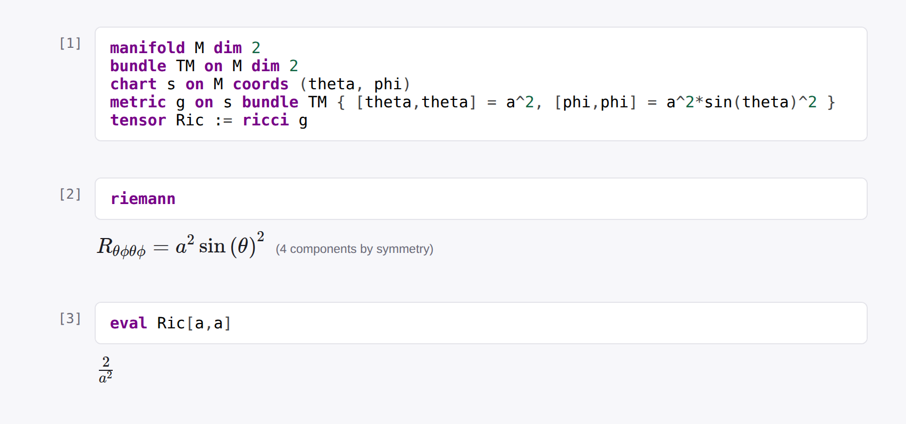
O escalar sai do traço, Ric[a,a] =
g^{\mu\nu}R_{\mu\nu}, que é a própria definição da
Seção 6.6 — e não de um comando separado que poderia estar certo por outro
caminho.
Conta 7 · a dedução
De onde vem R^\theta{}_{\phi\theta\phi}
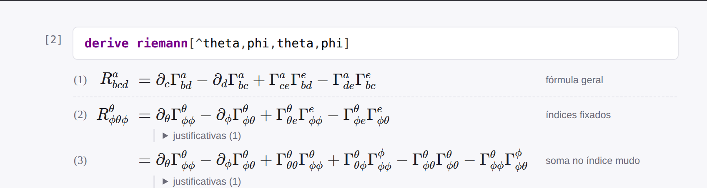
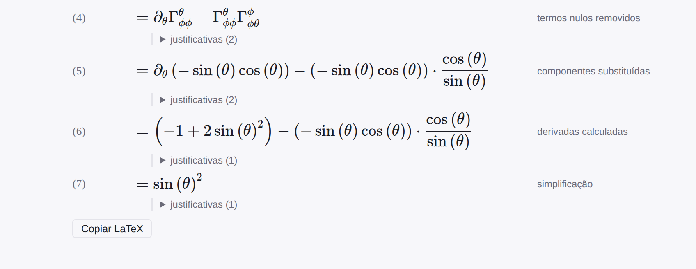
Conta 7 · a dedução
Os quatro termos, e o que sobra
A fórmula tem quatro parcelas — \partial_\theta\Gamma^\theta{}_{\phi\phi} -\partial_\phi\Gamma^\theta{}_{\phi\theta} +\Gamma^\theta{}_{\theta e}\Gamma^e{}_{\phi\phi} -\Gamma^\theta{}_{\phi e}\Gamma^e{}_{\phi\theta} — e é no passo dos termos nulos removidos que o aluno vê quais morrem, e por quê.
Aqui a derivação é a aula inteira da Seção 6.5: a curvatura mede a falha de \partial\Gamma em se cancelar contra \Gamma\Gamma. Com os quatro termos na tela, dá para ver o que no plano em polares se cancelou e aqui não.
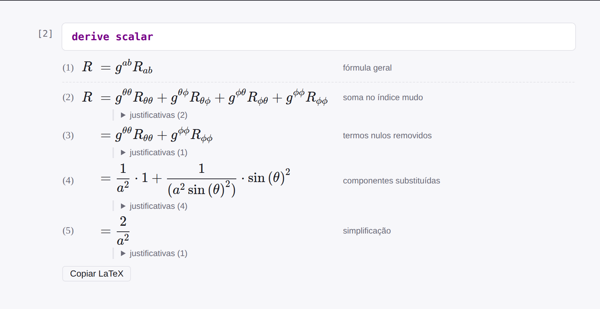
derive scalar: o escalar 2/a^2
saindo do traço, e não de uma fórmula decorada.
Conta 11 · a dedução
Einstein, um nível por vez
G_{\theta\theta}=R_{\theta\theta}-\tfrac12 g_{\theta\theta}R na esfera. Repare no que a justificativa faz: cada peça vem com a consulta que a produz.
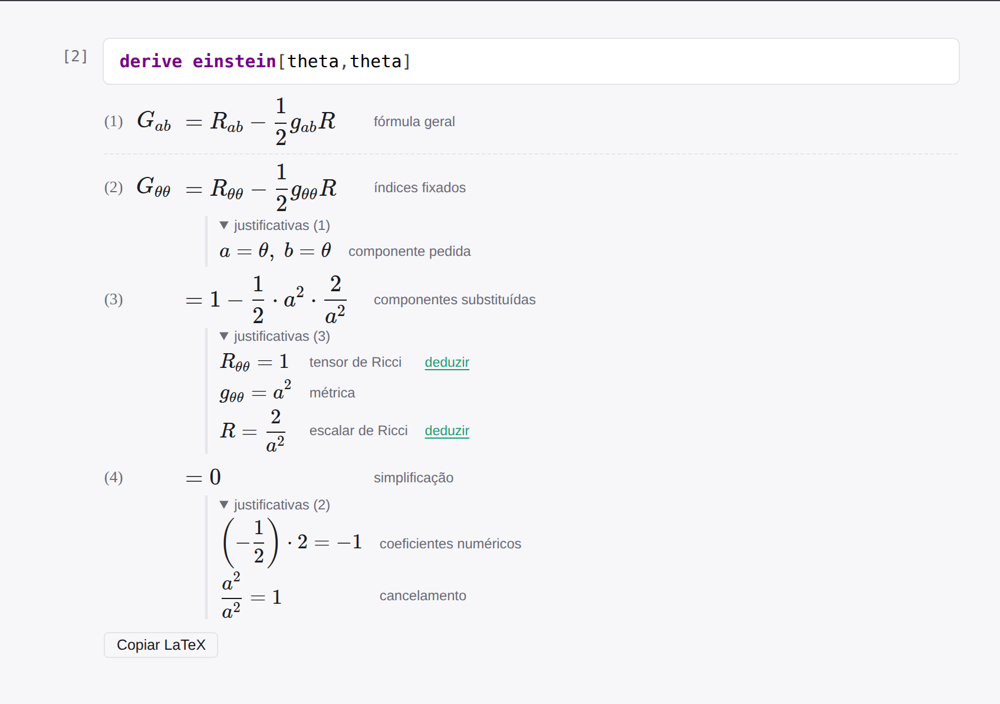
R_θθ remete a derive ricci[theta,theta], e
R a derive scalar — a dedução é navegável para
baixo até a métrica.
Conta 8 · Seção 6.5
O comutador de derivadas covariantes é o Riemann
A equação (6.19): [\nabla_\alpha,\nabla_\beta]W_\mu=R_{\mu\nu\alpha\beta}V^\nu. Sobre a esfera, declare um campo de 1-formas com componentes indeterminadas e o vetor que lhe corresponde:
P e Q ficam indeterminadas de propósito. Com um campo concreto, uma identidade falsa poderia fechar por acidente — e a verificação não teria provado nada sobre o caso geral.
Conta 8 · Seção 6.5
Primeiro o comutador; só depois a diferença
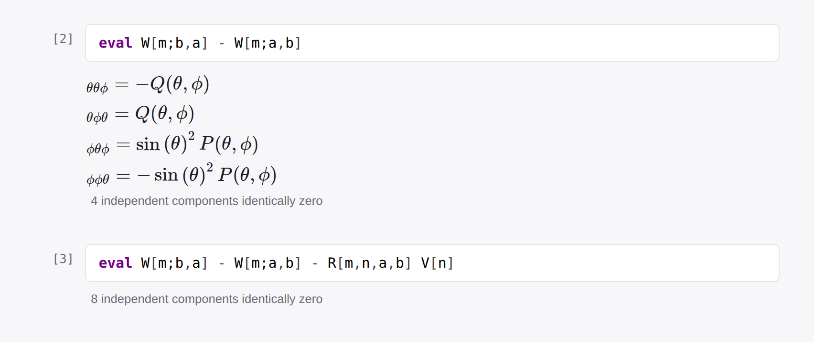
A primeira saída é que faz a segunda valer alguma coisa. Quatro das oito células do comutador são não nulas — só então o zero da segunda prova a identidade.
Conta 9 · Seção 6.5
As quatro simetrias, em Schwarzschild
R_{\alpha\beta\mu\nu}=-R_{\beta\alpha\mu\nu}=-R_{\alpha\beta\nu\mu}=R_{\mu\nu\alpha\beta},
mais a identidade cíclica — as quatro que reduzem 256 componentes a 20.
Sobre a métrica de Schwarzschild, basta tensor R := riemann g:
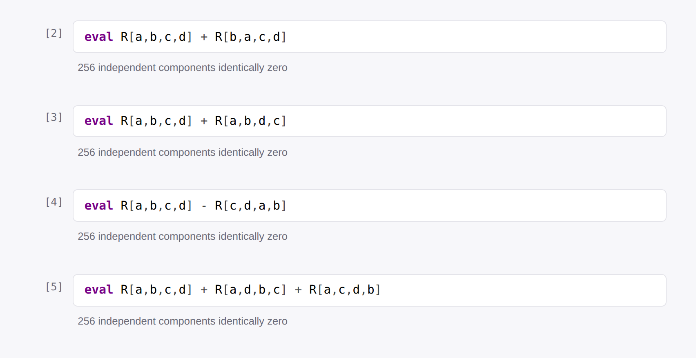
Schwarzschild tem 24 células não nulas no Riemann — nenhuma das quatro identidades fecha por vacuidade.
Conta 10 · Seção 6.6
Bianchi, na forma diferencial
R_{\alpha\beta\mu\nu;\lambda}+R_{\alpha\beta\lambda\mu;\nu}+R_{\alpha\beta\nu\lambda;\mu}=0. É a forma de onde tudo o mais vem — contraída duas vezes, dá \nabla_\mu G^{\mu\nu}=0.
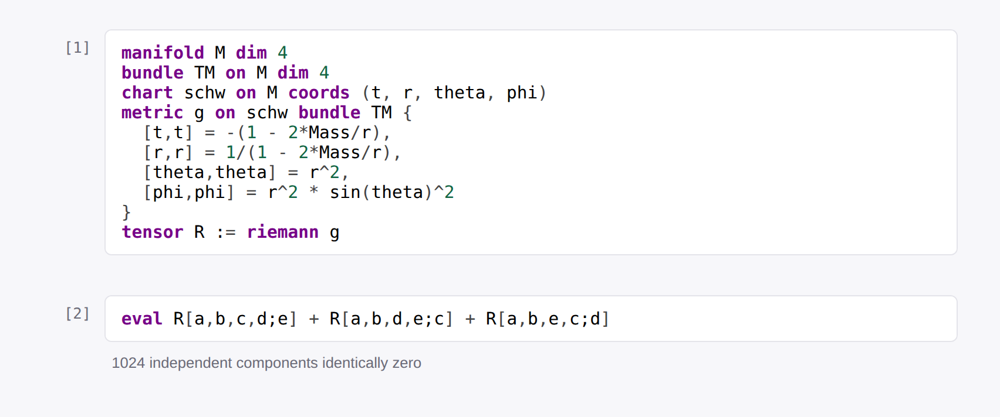
Mil e vinte e quatro células, cada uma uma derivada covariante de um tensor de ordem 4 — meio segundo. É a conta que ninguém faz à mão, e é a que sustenta as equações de campo.
Conta 11 · Seção 6.6
A divergência de Einstein, e o controle
G^{\alpha\beta}{}_{;\beta}=0 por identidade. Mas um zero sozinho não prova nada — por isso, ao lado, a divergência do Ricci, que não é nula.
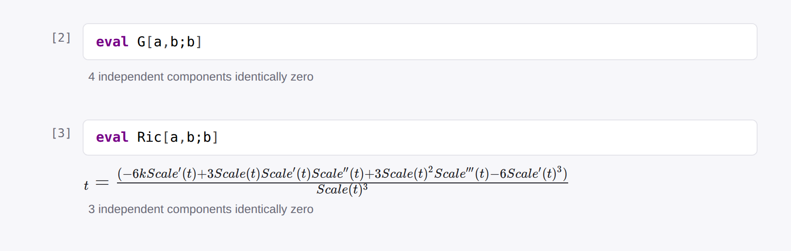
A métrica é FRW, e não Schwarzschild, de propósito: em vácuo G já é nulo componente a componente, e a divergência de zero é zero sem que \nabla tenha feito trabalho nenhum.
Parte 6
O método: um zero só vale com um controle
Três das onze contas devolveram tudo nulo. Isso é o resultado desejado — e é também o resultado que um programa quebrado daria.
| A conta | O controle que a valida |
|---|---|
| Riemann nulo em polares | a esfera, mesma máquina, não dá zero |
| Comutador -\ R\,V nulo | o comutador sozinho tem 4 células não nulas |
| \nabla_\beta G^{\alpha\beta}=0 | \nabla_\beta R^{\alpha\beta}\ne0, e o livro diz quanto vale |
| Simetrias em Schwarzschild | o Riemann tem 24 células não nulas ali |
É um hábito a levar para fora do programa. Toda vez que uma conta fecha em zero, pergunte qual conta vizinha não fecha — e faça essa também. Sem ela, você não distinguiu um teorema de um erro.
Parte 6
O que o ODEROM não faz
Não expande em série. O campo fraco — a aproximação g_{\mu\nu}=\eta_{\mu\nu}+h_{\mu\nu} com |h|\ll1 — fica fora. É uma consulta de outra natureza.
Não procura vetores de Killing. Simetrias e quantidades conservadas não existem como pergunta.
A simplificação tem limite.
exp(2x)/exp(x) não reduz. O limite está fixado por um
teste, e não é um descuido: fechá-lo mudaria a grafia de toda saída com
exponencial, afastando-a do que o livro escreve.
Saber onde a ferramenta para faz parte de usá-la. Um programa que tentasse responder a tudo responderia mal a alguma coisa — e sem avisar qual.
Para fazer
Cinco exercícios
| # | O que pedir ao programa |
|---|---|
| 1 | O toro: g_{\chi\chi}=b^2, g_{\phi\phi}=(a+b\cos\chi)^2. Mostre que K troca de sinal — e confira que \int K\,\dd\mathcal V=0. |
| 2 | A três-esfera em coordenadas hiperesféricas. Confirme R=6/a^2, sem \chi nem \theta na resposta. |
| 3 | Schwarzschild: verifique R_{\mu\nu}=0 e, ainda assim, Kretschmann =48M^2/r^6. Vácuo não é planura. |
| 4 | A divergência pela raiz do determinante, \nabla_\alpha V^\alpha=\tfrac{1}{\sqrt{|g|}}\partial_\alpha(\sqrt{|g|}V^\alpha) — equação (6.13). Compare com eval V[a;a]. |
| 5 | Reissner–Nordström: por que R=0 mas R_{\mu\nu}\ne0? Qual é o traço que se anula? |
Em todos: antes de rodar, escreva no papel o que você espera. O valor do exercício está na diferença entre a previsão e a saída.
Onde
Abrir, salvar, citar
oderom.pages.dev
Abre no navegador, sem instalar nada. O caderno salva em
.od na sua máquina — nada sobe para lugar nenhum.
O botão Exportar entrega o mesmo resultado como código SymPy ou Mathematica, para quem quiser seguir a conta em outro ambiente.
Como citar. O programa tem DOI permanente no Zenodo:
As onze contas destes slides, mais onze outras do Schutz, estão reproduzidas no documento ODEROM contra Schutz, que acompanha o programa — cada saída capturada de uma execução real.